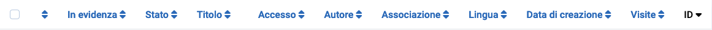
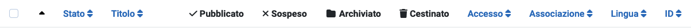
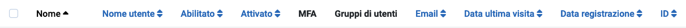

Le intestazioni delle colonne appaiono nelle viste elenco per indicare la natura delle informazioni
in quella colonna. Le intestazioni variano da componente a componente. Molte intestazioni di colonna
possono essere utilizzate per ordinare l'elenco in quella colonna, ma non è sempre
così. Ad esempio, nelle viste elenco delle Categorie le quattro colonne Stato non vengono
utilizzate per l'ordinamento poiché tutti gli elementi in quelle colonne hanno lo stesso
stato.
Alcuni esempi
Intestazioni delle colonne della Lista degli Articoli

Intestazioni delle colonne della Lista delle Categorie

Intestazioni delle colonne della Lista degli Utenti

Ordinare per Colonna
Per modificare l'ordine della lista, seleziona l'icona di ordinamento delle colonne. In una colonna non utilizzata per l'ordinamento, questa è una doppia freccia su/giù
().
Per la colonna utilizzata per l'ordinamento, è una freccia su
() o una freccia giù
() per indicare
la direzione corrente dell'ordinamento, crescente o decrescente.
Alcuni Intestazioni Comuni
Checkbox Per selezionare tutti gli articoli, seleziona il riquadro nell'intestazione della colonna.
Il pulsante della barra degli strumenti 'Azioni' diventa attivo. Un'azione può essere applicata agli
elementi visibili nella pagina. Non è applicata agli elementi nelle pagine successive
che non sono visibili.
Ordinamento Puoi cambiare l'ordine di un articolo all'interno di una lista come
segue:
Nelle Opzioni di Filtro, limita la lista agli elementi da ordinare, ad esempio
elementi in una Lingua selezionata o elementi di un Autore selezionato.
Seleziona l'icona di ordinamento nella prima
intestazione di colonna per renderla attiva.
Seleziona una delle icone verticali a ellissi
che appaiono quando l'ordinamento è attivo e trascinala su o giù per cambiare la
posizione di quella riga nella lista.
Titolo o Nome Il titolo dell'articolo è solitamente un link alla
pagina Modifica per quell'elemento.
ID Un numero identificativo unico per questo articolo. Non può essere cambiato.